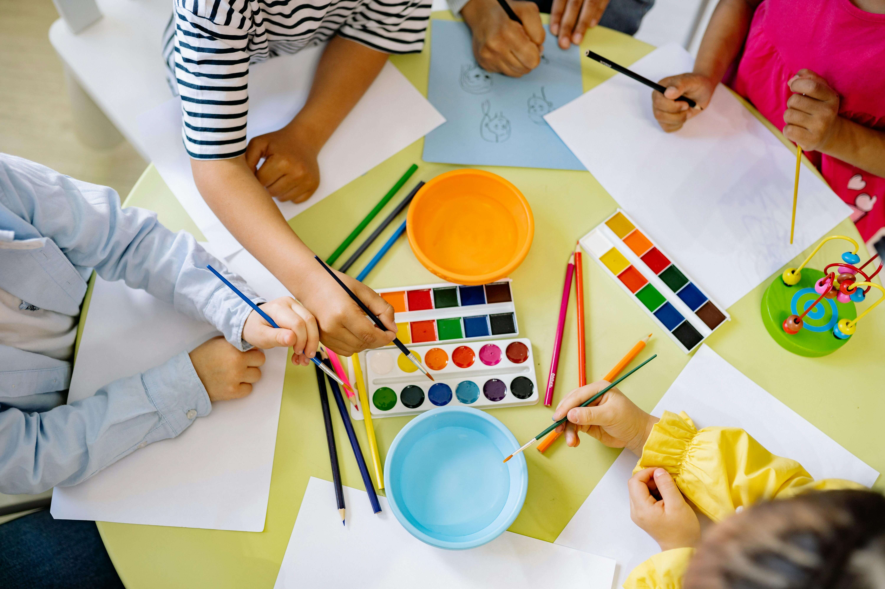
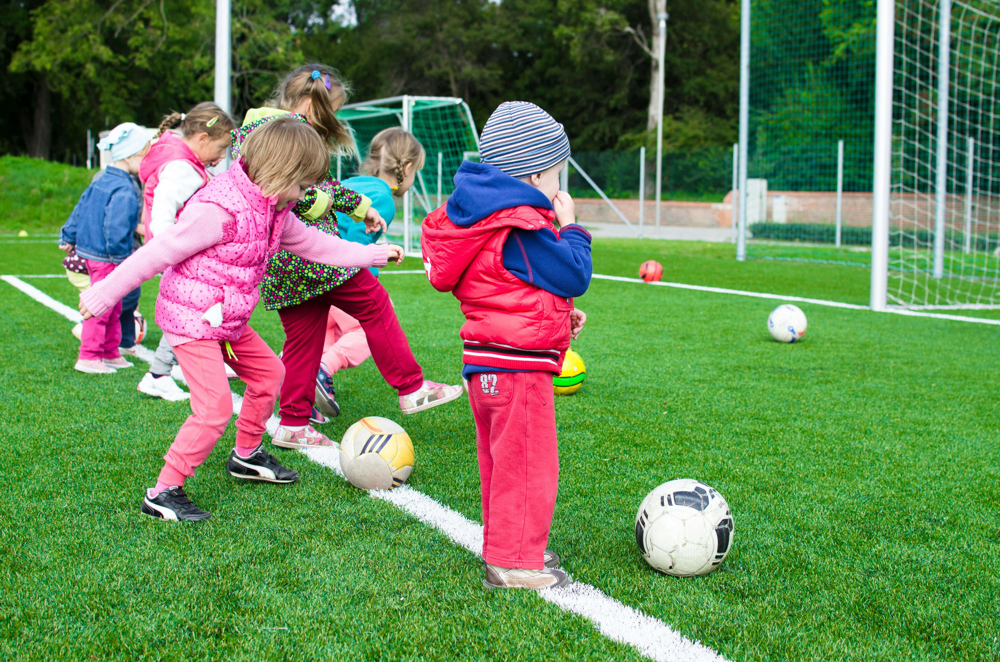

Nossos Projetos
Conheça em detalhes as iniciativas que transformam o dia a dia de nossas crianças e adolescentes.
Educação
Reforço Escolar
Oferecemos reforço escolar diário para crianças de 6 a 10 anos, ajudando com tarefas, leitura e matemática em um ambiente lúdico e seguro.

Arte & Cultura
Arte e Cultura
Nossas oficinas de pintura, música, dança e teatro são projetadas para desenvolver a criatividade, a expressão e a autoconfiança.

Esporte & Lazer
Esporte e Lazer
Promovemos atividades esportivas diárias, incluindo futebol, vôlei e gincanas, ensinando sobre saúde, disciplina e trabalho em equipe.
Seja um Voluntário
Seu tempo e seu talento podem transformar vidas. Faça parte da nossa família!
Faça sua Doação
Nossa organização depende de doações para continuar. Cada contribuição faz uma enorme diferença.
Chave PIX (CNPJ): 00.000.000/0001-00